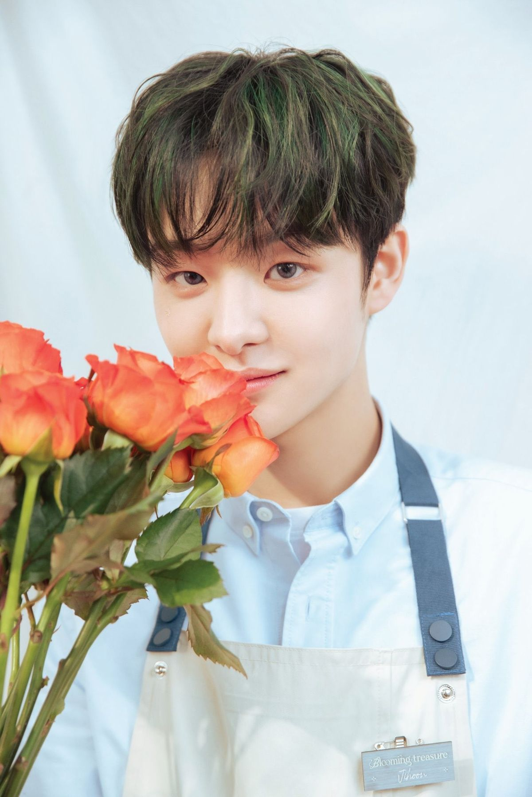

朴志焄 PARK JIHOON
2000.03.14 • 🐶

🎸 長著一張溫柔臉，內核是搖滾
朴志焄的外表很容易讓人先入為主：臉柔和、聲音穩、說話不急不緩，看起來是那種溫和型的人。但了解之後會發現，他的內核和外表完全不是一回事。
🔥 聲帶出過問題，硬是靠練習把歌唱能力練成了武器
朴志焄的 vocal 不是那種天賦碾壓型的，是練出來的。
他的聲帶曾經出過問題，這對一個 vocal 來說是很要命的事。但他沒有繞過去，是靠練習一點點把歌唱能力重新建立起來，最後練成了隊內可以拿得出手的武器。本人對自己的評價是：「我挺耐造的。」
🤝 不擅長肉麻，但行動一直到位
朴志焄表達愛意的方式不是嘴上說。他自稱在 Weverse 上和粉絲每天嘮嗑就是最大的愛意表達，不擅長肉麻的話，但行動一直到位。
作為前隊長，他在隊內的角色是氣氛粘合劑。不是那種靠煽情維系關係的類型，是日常裡一直在、一直在搭話、一直在把場子撐住的那種。弟弟們和他相處的方式也很放鬆，能鬧能開玩笑，說明這個哥哥讓人沒有距離感。
⚡ 舞台上的穩定器
朴志焄在舞台上的存在感不是最搶眼的那種，但他是穩定器。
vocal 穩，舞蹈也在隊內可以站住，T5 小分隊裡和道榮、庭煥、俊奎、材赫一起發《MOVE》，舞蹈 line 的完成度不拖後腿。大型團體裡，這種「不搶話但舞台從不掉鏈子」的類型，往往是看得越久越覺得可靠的那一個。
👾 一些很朴志焄的事
這些事放在一起，是一個外表柔和、內裡硬核、不怎麼說漂亮話但一直在做事的人。
📌 入坑路線
| 順序 | 看什麼 | 看什麼點 |
|---|---|---|
| 1 | 《MOVE》T5 舞台 | 舞蹈 line 的完成度，先看舞台 |
| 2 | vocal 現場 / 消音 | 練出來的唱功，穩定度 |
| 3 | 團綜 / 直播片段 | 不肉麻但一直在的氣氛粘合劑 |
| 4 | 聊音樂 / 聊搖滾的物料 | 溫柔臉和搖滾內核的反差 |
| 5 | 隊長時期的幕後 | 穩的那一個，扛事的那一個 |
🎯 一句話總結
長著溫柔臉，裝著搖滾心，聲帶出過問題卻把唱功練成了武器——
不擅長說漂亮話，但一直在做事。